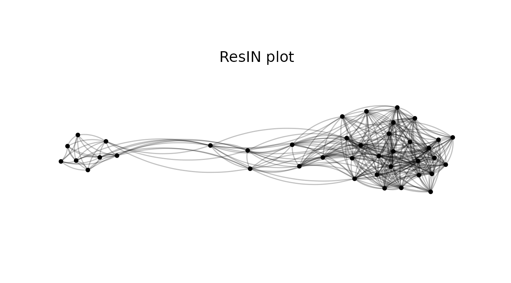
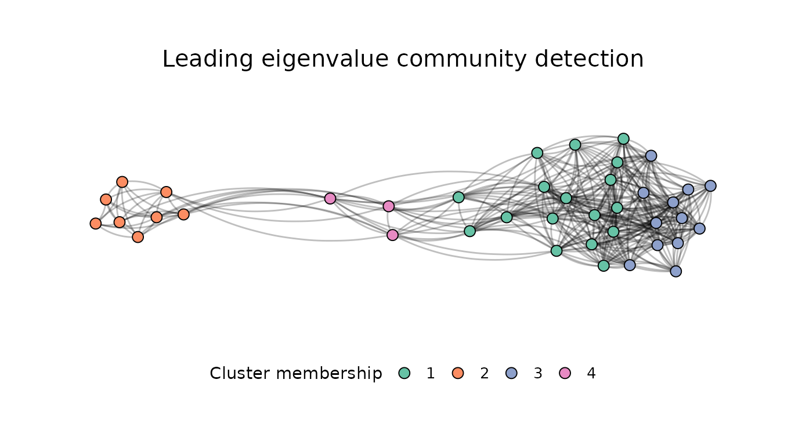
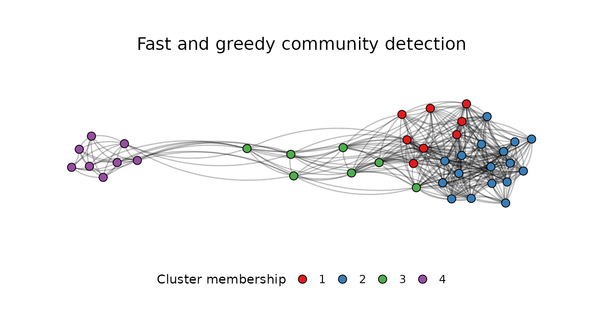
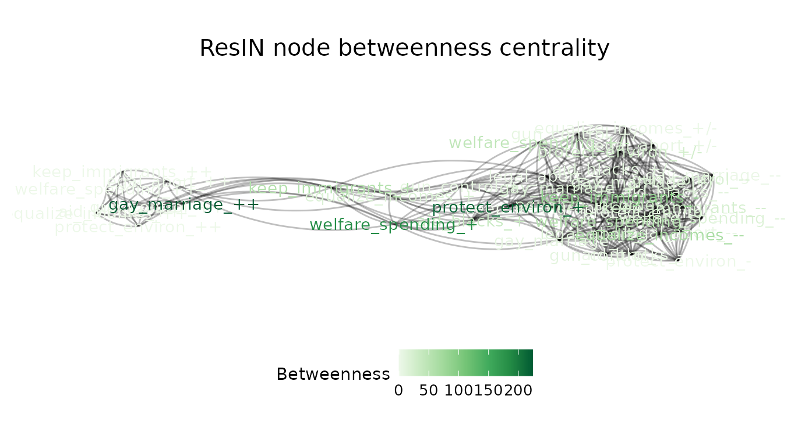
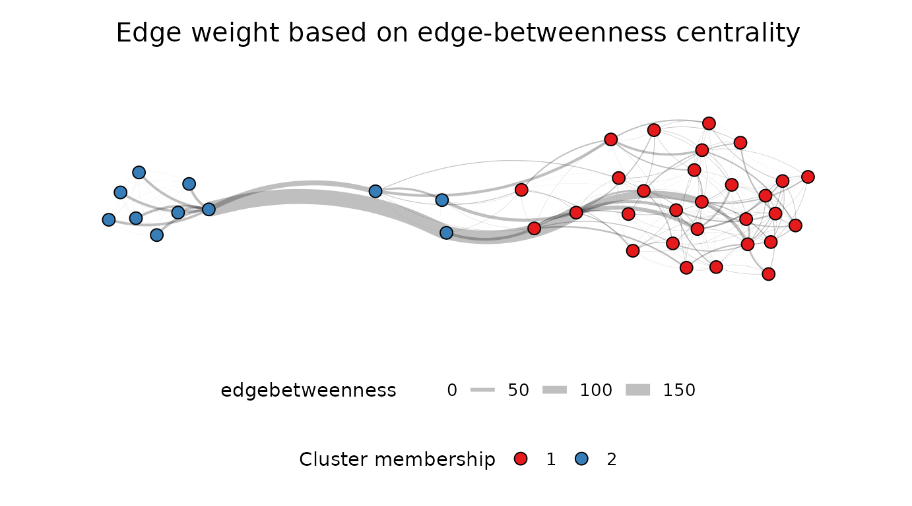
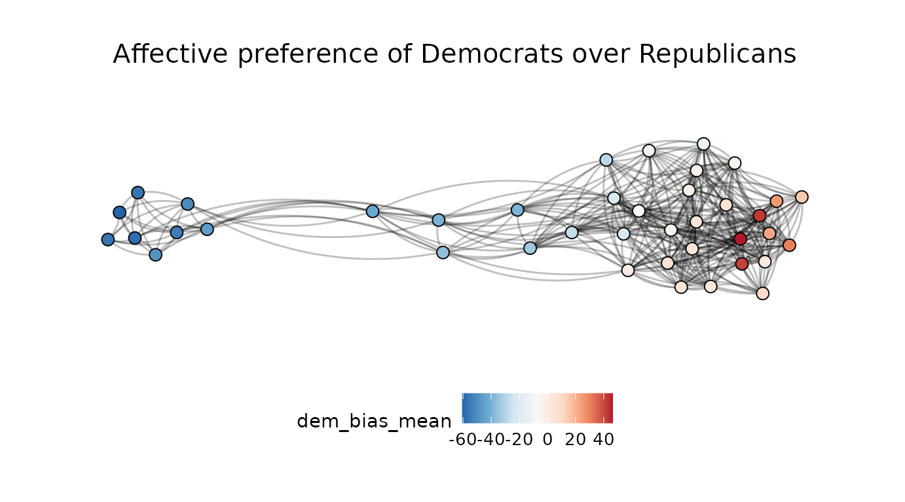
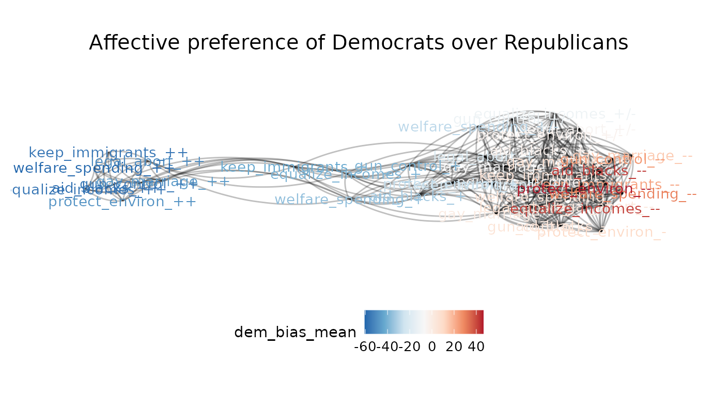
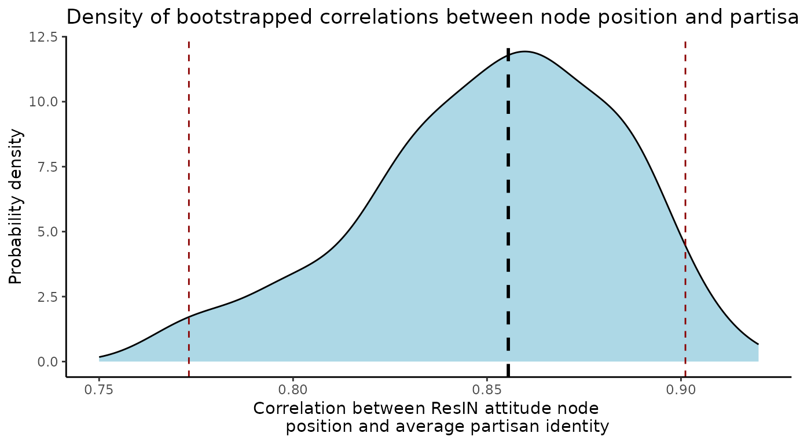
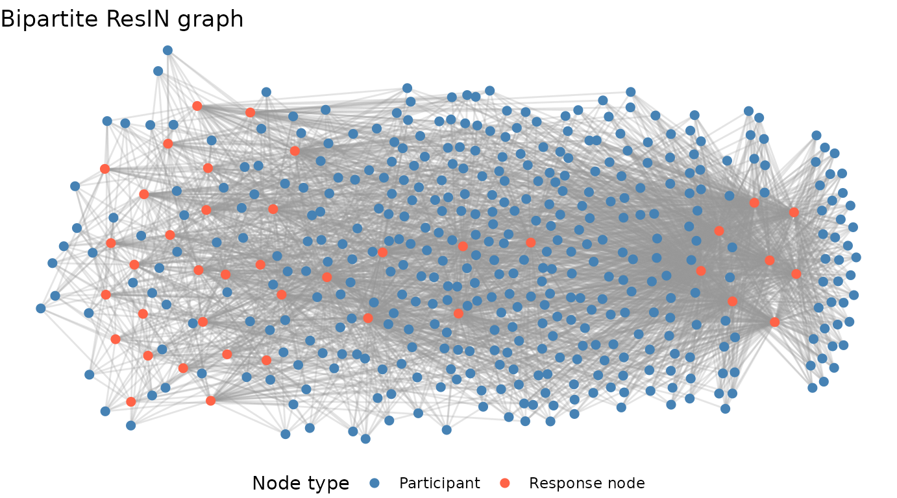

Welcome to the ResIN tutorial! ResIN stands for ‘Response Item Networks’ and was first introduced by Carpentras et.al. 2022. If you are interested in all things ResIN-related, including news, papers, and the corresponding Python tutorial, please check out the ResIN website.
This tutorial primarily introduces the ResIN-R package and provides an overview of the main functions and their capabilities. A bit of background knowledge in R and the Tidyverse is required to follow but you certainly do not need to have advanced skills either in R or network statistics. For an in-depth conceptual introduction to ResIN as a method, please refer to the ResIN website or the above-referenced publication. The website also features dates for upcoming introductory talks by the ResIN team if you are instead interested in a live, hands-on, demonstration.
Introducing ResIN
ResIN is a model of co-endorsement patterns within social attitudes. Broadly understood, attitudes denote sentiments towards a social or political issue, for instance, opposing cuts the minimum wage, being neutral on carbon taxes, or supporting equal pay for women and men. ResIN presumes that the more people co-endorse a given pair of attitudes (e.g. simultaneously supporting equal pay while opposing cuts to the minimum wage), the closer such attitudes are related to one another in a latent space.
More formally, ResIN models all possible interactions among a given set of attitudes as a statistical network, where responses form the nodes and the edge-weights (or connecting links) determines the strength of the attractive force between them. Unlike classic belief network models, ResIN takes explicit advantage of the latent space in which attitude nodes are embedded in. Given that only co-endorsed (i.e. positively correlated) nodes attract one another, a force simulation involving all survey response nodes (i.e. a force-directed algorithm) results in an interpretable, theoretically meaningful latent space in which both attitudes and people can be located.
To see this in action, let’s replicate and extend the analysis in Lüders et.al.’s 2024 piece, ‘Attitude networks as intergroup realities: Using network‐modelling to research attitude‐identity relationships in polarized political contexts.’
Data import and cleaning
As with any data analysis, a little bit of housekeeping goes a long way, and ResIN is no exception! Let’s use the Lüders et.al. (2024) data – which comes for free with the R-package – to illustrate this process.
First, we select the core set of eight issue items from the Lüders et.al. data and, as in the paper, re-code a few of these such that agreement always denotes the liberal position. (This step is not necessary but makes interpretation of the the results easier). These attitudes deal with the legality of abortion, reducing income inequality, deporting illegal immigrants, increasing welfare spending, increase welfare spending, gay marriage, protecting the environment, gun control, and government aid to African Americans.
We’ll also give each item and their respective response options more telling labels to further improve visual interpretability.
## Loading and installing the required packages
if(!require("ResIN")) install.packages('ResIN')
library(ResIN)
if(!require("dplyr")) install.packages('dplyr')
library(dplyr, warn.conflicts = FALSE)
## Loading the data
BrJSocPsychol_2024 <- ResIN::BrJSocPsychol_2024
## Sub-setting and re-coding items in a liberal-conservative direction
Core_Items <- BrJSocPsychol_2024 %>% dplyr::select(Q9_1, Q9_2, Q9_3, Q9_4,
Q9_5, Q9_6, Q9_7, Q9_8) %>%
dplyr::mutate(Q9_1 = dplyr::recode(Q9_1, "Strongly Disagree" = "Strongly Agree",
"Somewhat Disagree" = "Somewhat Agree",
"Neutral" = "Neutral",
"Somewhat Agree" = "Somewhat Disagree",
"Strongly Agree" = "Strongly Disagree"),
Q9_3 = dplyr::recode(Q9_3, "Strongly Disagree" = "Strongly Agree",
"Somewhat Disagree" = "Somewhat Agree",
"Neutral" = "Neutral",
"Somewhat Agree" = "Somewhat Disagree",
"Strongly Agree" = "Strongly Disagree"))
## Relabeling the attitudes
colnames(Core_Items) <- c("legal_abort", "equalize_incomes", "keep_immigrants",
"welfare_spending", "gay_marriage", "protect_environ",
"gun_control", "aid_blacks")
# Assigning response symbols for easier interpretation
Core_Items <- Core_Items %>%
mutate(across(everything(), ~ dplyr::recode(.,
"Strongly Agree" = "++",
"Somewhat Agree" = "+",
"Neutral" = "+/-",
"Somewhat Disagree" = "-",
"Strongly Disagree" = "--",
)))
## Setting the seed for consistency
set.seed(22)The cleaned data set now looks like this:
head(Core_Items)
#> # A tibble: 6 × 8
#> legal_abort equalize_incomes keep_immigrants welfare_spending gay_marriage
#> <chr> <chr> <chr> <chr> <chr>
#> 1 -- - - +/- --
#> 2 ++ ++ + ++ ++
#> 3 + + +/- + +/-
#> 4 + +/- ++ +/- -
#> 5 - + + + -
#> 6 ++ + ++ ++ ++
#> # ℹ 3 more variables: protect_environ <chr>, gun_control <chr>,
#> # aid_blacks <chr>Create your first ResIN network!
Let’s get to the meat of it. For a first, bare-bones ResIN model, we
can simply supply our set of Core_Items to the
ResIN function.
ResIN_out <- ResIN(Core_Items)
Not too bad! You’ll notice that the ResIN function
produces and plots a basic ggplot by default. The latter feature can be
turned of by setting plot_ggplot=FALSE (something you
definitely want to do if you need to bootstrapping thousands of
networks, but we’ll get to that part later). You can always access and
call the ResIN-plot object in the stored output:
ResIN_output$ResIN_ggplot. To suppress the off-the-shelf
plot generation altogether, simply set
generate_ggplot=FALSE.
One feat you might have noticed from the above plot is that ResIN does not innately care if politically left-leaning attitudes are also plotted on the left-hand side of the graph. In fact, the left-wing attitude cluster happens to appear on the right-hand-side in above plot.
If you are modeling concepts for which spatial orientation has a
particular meaning, such as political ideology, you can specify a
particular attitude node which should consistently appear on the left
side of the resulting graph with the left_anchor argument.
Below, we’ll set the left_anchor = "legal_abort_++" as
strongly wishing to preserve legal access to abortion appears as one of
the most left-wing attitude in the starting plot. (Setting a
left_anchor does not affect the network estimation or
spatial positioning of the nodes - it simply flips the x-axis should the
target node appear on the right-hand half of the graph). We’ll also set
the random seed to avoid (minor) fluctuations in-between
runs.
ResIN_out <- ResIN(Core_Items, plot_ggplot=FALSE,
left_anchor = "legal_abort_++", seed = 22)
ResIN_out$ResIN_ggplot
If you would like to produce a less busy looking plot, you can
replace the node labels with a simpler geom_point-aesthetic
by specifying plot_responselabels=FALSE.
ResIN_out <- ResIN(Core_Items, left_anchor = "legal_abort_++",
plot_responselabels=FALSE, seed = 22)
Node coloring options & visual enhancements
So far so good. The above plots nicely reveal the familiar unidimensional spectrum in US politics with item responses in favor of welfare spending, protecting the environment, and protecting abortion rights on the left and their inverse positions on the political right. However, the graph also shows that the left-leaning attitude cluster appears much more consolidated; left-wingers (strongly) agree much more frequently and consistently than respondents on the opposite end of the ideological aisle. But what about the moderates? Let’s try to reproduce figure 2a in Lüders et.al.’s (2024, p. 45) to get some more clarity on them.
ResIN_out <- ResIN(Core_Items, plot_whichstat = "choices",
response_levels = c("--", "-", "+/-" , "+", "++"),
plot_responselabels = FALSE,
plot_title = "BrJSocPsychol 2024 ResIN Network",
left_anchor = "legal_abort_++", seed = 22)
In the above function call, you’ll notice a couple of additional
arguments. The most important one, plot_whichstat,
determines which piece of information we’d like to visually enhance. As
in Lüders’s figure 2a, we simply opted for the different response
choices by setting plot_whichstat="choices". Since R
applies an alpha-numeric coding for qualitative response levels, you can
supply the correct order (either from most to least or least to most
agreement) with the response_levels argument. This should
be a character vector of the same length of the response levels – just
remember to set the response items in the correct order.
As in the original paper, we omit the response labels in favor of
dots for nodes. Finally, the plot_title argument lets you
specify a custom title. Neat - ha?!
The above plot shows that the neutral nodes (white) are far more often co-endorsed with the moderate-right (orange) and strong-right (dark red) choice options. Note that at this point, we infer the meaning of the different political attitudes as either left-leaning or right-leaning intuitively, assuming for example that left-wingers should endorse abortion rights while right-wingers oppose these. We will describe a more rigorous empirical approach based on covariates later in the vignette.
Thus far, however, the right-wing attitude space appears more mixed as it incorporates both neutral and even some of the moderate-left leaning response options. How about estimating and visualizing node clusters next?
Cluster detection and plotting
The ResIN() function can natively call several cluster detection
algorithms. To turn this feature off, simply set
detect_clusters=FALSE. By default, ResIN obtains latent
cluster assignments based on the leading eigenvector method
(cluster_method="cluster_leading_eigen") but any of the
cluster detection algorithms currently implemented in the the igrah-package can
be utilized.
To avoid confusion with the above color scheme, we’ll also specify a
different color_palette below. The ResIN function supports
all default ggplot
scale-brewer palettes.
## Using leading eigenvalue by default:
ResIN_out <- ResIN(Core_Items, detect_clusters = TRUE, plot_whichstat = "cluster",
plot_responselabels = FALSE, plot_title = "Leading eigenvalue community detection",
color_palette = "Set2", seed = 22, left_anchor = "legal_abort_++")
## Switching to edge-betweenness cluster detection:
ResIN_out <- ResIN(Core_Items, detect_clusters = TRUE, plot_whichstat = "cluster",
cluster_method = "cluster_fast_greedy", plot_responselabels = FALSE,
plot_title = "Fast and greedy community detection",
color_palette = "Set1", seed = 22, left_anchor = "legal_abort_++")
The above networks nicely showcase how different community detection
algorithms can yield different solutions. However, both the
leading-eigenvalue and fast-greedy examples indicate that the moderate
node communities (1, and 4 above and 1 below) appears spatially more
proximate to the right-wing cluster which suggests a more similar
answering behavior among these groups of respondents. You can find the
node-level cluster assignments via
ResIN_out$ResIN_nodeframe$cluster. The individual-level
probabilistic, cluster assignments can be accessed via the auxiliary
objects: ResIN_out$aux_objects$cluster_probabilities. The
maximum probability assignments are contained in the
max_clusterprob object stored in the same location.
head(ResIN_out$aux_objects$cluster_probabilities)
#> cluster_1 cluster_2 cluster_3 cluster_4
#> 1 0.25 0.625 0.125 0.000
#> 2 0.00 0.000 0.125 0.875
#> 3 0.25 0.125 0.625 0.000
#> 4 0.50 0.250 0.125 0.125
#> 5 0.00 0.125 0.875 0.000
#> 6 0.00 0.000 0.125 0.875Node centrality
The ResIN() function delivers off-the-shelve estimates
for various node-level statistics, including the strength, closeness,
and betweenness-centrality, as well as expected node influence. It also
estimates a couple of graph-level quantities including the global
clustering coefficient, average path length, and the network diameter.
These quantities are always estimated by default; to turn this feature
off, simply specify network_stats=FALSE. The example below
visualizes node-level differences in betweenness centrality (it is
possible to set plot_whichstat to either “Strength”,
“Closeness”, “Betweenness”, or “ExpectedInfluence”). The raw metrics for
each node-level statistic can be found in
ResIN_out$ResIN_nodeframe. Graph-level statistics are
stored in ResIN_out$graph_stats.
ResIN_out <- ResIN(Core_Items, plot_whichstat = "Betweenness", plot_responselabels = TRUE,
plot_title = "ResIN node betweenness centrality", seed = 22, color_palette = "Greens",
left_anchor = "legal_abort_++")
The above output suggests that for the node with the highest betweenness-centrality among the left-wing attitude cluster deals with gay marriage, implying that pro-LGTBQ attitudes possess the highest bridging capacity between the liberal and the moderate attitude clusters. Purportedly, this means that liberals should engage in conversations about this issue, rather than abortion or questions about race when aiming to reach or (even build trust with) other ideological communities.
Edge centrality and adjustments to the edge width
ResIN() also supports visual adjustments to the edge
thickness on the basis of either the bi-variate correlation weight
(plot_edgestat = "weight") or the edge betweenness
centrality (plot_edgestat = "cluster_edge_betweenness").
The below example showcases the latter while also visualizing the
clusters detected with the edge betweenness algorithm.
ResIN_out <- ResIN(Core_Items, detect_clusters = TRUE, plot_whichstat = "cluster",
cluster_method = "cluster_edge_betweenness",
plot_edgestat = "edgebetweenness",
plot_responselabels = FALSE,
plot_title = "Edge weight based on edge-betweenness centrality",
seed = 22, color_palette = "Set1", left_anchor = "legal_abort_++")
Using covariates
The ability to visualize various covariates of interest at the node-level is one of ResIN’s most powerful assets. Lüders et.al.’s (2024, p. 45) employed this strategy to co-visualize ResIN node position and the node-level partisan-affective polarization among their sample (figure 2b.).
To accomplish this with the ResIN function, we first need to attach
our covariates of interest to the attitude frame. Then, we simply need
to tell ResIN which data columns to treat as node variables by supplying
a dedicated node_vars vector. Likewise we need to supply a
separate string, node_covars, specifying the desired set of
node-level covariates. Finally, we have to tell ResIN using the argument
node_costats which covariate statistic it should calculate
for which of the given covariates. Currently supported are
"mean", "median", "sd",
"var", and several other, base-R functions. Just make sure
that node_costats has the same length as the
node_covars so that ResIN knows which statistic to extract
from which covariate.
Attached to the ResIN_nodeframe, the resulting ResIN
object will feature a new set of variables with concatenated labels
consisting of the original co-variate name and the desired statistic
(e.g., ResIN_nodeframe$age_mean). If you want to visualize
these node-level covariates, you simply need to supply the concatenated
covariate-statistic label to the plot_whichstat argument.
The example below shows how to replicate the affective polarization
measure in Lüders et.al. (2024) following this strategy.
## Calculating the relative preference of Democrats over Republicans
##(Democrat feelings thermometer minus republican feelings thermometer)
Core_Items$dem_bias <- as.numeric(BrJSocPsychol_2024$Q15_1) - as.numeric(BrJSocPsychol_2024$Q15_2)
## Separately specifying attitude nodes and covariate here:
ResIN_out <- ResIN(Core_Items,
node_vars = c("legal_abort", "equalize_incomes", "keep_immigrants",
"welfare_spending", "gay_marriage", "protect_environ",
"gun_control", "aid_blacks"), node_covars = c("dem_bias"),
node_costats = c("mean"), plot_whichstat = "dem_bias_mean",
plot_responselabels = FALSE, left_anchor = "legal_abort_++",
plot_title = "Affective preference of Democrats over Republicans",
color_palette = "RdBu", seed = 22)
Our latest plot nicely visualizes the co-dependency between affective and issue polarization which characterizes contemporary American political attitude space. However, it also shows that the relationship is not entirely symmetric; while all left-wing attitudes are associated with approximately the same degree of affective bias, only select attitudes within the more diverse, center/ center-right attitude community are predominantly endorsed by affectively polarized individuals. Toggling back to the complete response labels, we’ll note that these respondents strongly reject government aid to African Americans and environmental regulations in particular.
ResIN_out <- ResIN(Core_Items,
node_vars = c("legal_abort", "equalize_incomes", "keep_immigrants",
"welfare_spending", "gay_marriage", "protect_environ",
"gun_control", "aid_blacks"), node_covars = c("dem_bias"),
node_costats = c("mean"), plot_whichstat = "dem_bias_mean",
plot_responselabels = TRUE, left_anchor = "legal_abort_++",
plot_title = "Affective preference of Democrats over Republicans",
color_palette = "RdBu", seed = 22)
Here is a glimpse at the above results in tabular form:
head(ResIN_out$ResIN_nodeframe[, 8:9], 10)
#> dem_bias_mean node_label
#> legal_abort_- -6.500000 legal_abort_-
#> legal_abort_-- -2.489362 legal_abort_--
#> legal_abort_+ 21.222222 legal_abort_+
#> legal_abort_+/- 5.100000 legal_abort_+/-
#> legal_abort_++ 50.717300 legal_abort_++
#> equalize_incomes_- 5.159091 equalize_incomes_-
#> equalize_incomes_-- -41.571429 equalize_incomes_--
#> equalize_incomes_+ 39.619048 equalize_incomes_+
#> equalize_incomes_+/- 11.122449 equalize_incomes_+/-
#> equalize_incomes_++ 56.335821 equalize_incomes_++Spatial interpretation and individual latent space scores
Finally, let’s turn our attention towards the latent space in which
our ResIN networks are embedded in. As indicated above, ResIN combines
belief network analysis with latent variable modeling in that the
spatial location of the attitudes can be interpreted as an underlying
latent spectrum. Following Lüders et.al.’s core hypothesis, if the
left-right location of the abstract network space correlates
substantially with people’s partisan identities and animosities, there
should be strong reason to believe that the ResIN network spatially
captures the liberal-conservative attitude spectrum. You can access the
node location on the main spatial axis simply via
ResIN_out$ResIN_nodeframe$x.
## Further attaching partisan identification
Core_Items <- Core_Items %>% dplyr::mutate(partisan = as.numeric(recode(BrJSocPsychol_2024$Q13,
"Democrat" = 2,
"Independent" = 1,
"Republican" = 0)))
ResIN_out <- ResIN(Core_Items, node_vars = c("legal_abort", "equalize_incomes",
"keep_immigrants", "welfare_spending",
"gay_marriage", "protect_environ",
"gun_control", "aid_blacks"),
node_covars = c("dem_bias", "partisan"), node_costats = c("mean", "mean"),
plot_ggplot = FALSE)
## Loading the psych package to run the correlation test.
if(!require("psych")) install.packages('psych')
library(psych)
## Partisanship
corr.test(ResIN_out$ResIN_nodeframe$x, ResIN_out$ResIN_nodeframe$partisan_mean)
#> Call:corr.test(x = ResIN_out$ResIN_nodeframe$x, y = ResIN_out$ResIN_nodeframe$partisan_mean)
#> Correlation matrix
#> [1] 0.87
#> Sample Size
#> [1] 40
#> These are the unadjusted probability values.
#> The probability values adjusted for multiple tests are in the p.adj object.
#> [1] 0
#>
#> To see confidence intervals of the correlations, print with the short=FALSE option
## Affective polarization
corr.test(ResIN_out$ResIN_nodeframe$x, ResIN_out$ResIN_nodeframe$dem_bias_mean)
#> Call:corr.test(x = ResIN_out$ResIN_nodeframe$x, y = ResIN_out$ResIN_nodeframe$dem_bias_mean)
#> Correlation matrix
#> [1] 0.89
#> Sample Size
#> [1] 40
#> These are the unadjusted probability values.
#> The probability values adjusted for multiple tests are in the p.adj object.
#> [1] 0
#>
#> To see confidence intervals of the correlations, print with the short=FALSE optionThe Pearson correlations with the node location in the latent space with partisanship and democratic feelings thermometer bias of 0.86 and 0.88, respectively, strongly suggest that ResIN innately captures some of the essence of the spatial-ideological divisions among the American public.
But what about the respondents themselves? The ResIN()
function can obtain scores for all survey-takers by taking the average
of the node positions among the attitude nodes that a given individual
endorsed. The spatial scores are stored in a n*2 data-frame
called ResIN_out$ResIN_scores; the major axis scores appear
as raw_x and the minor axis component as
raw_y.
## Partisanship at the individual level
corr.test(Core_Items$partisan, ResIN_out$ResIN_scores$raw_x)
#> Call:corr.test(x = Core_Items$partisan, y = ResIN_out$ResIN_scores$raw_x)
#> Correlation matrix
#> [1] 0.58
#> Sample Size
#> [1] 402
#> These are the unadjusted probability values.
#> The probability values adjusted for multiple tests are in the p.adj object.
#> [1] 0
#>
#> To see confidence intervals of the correlations, print with the short=FALSE option
## Affective polarization at the individual level
corr.test(Core_Items$dem_bias, ResIN_out$ResIN_scores$raw_x)
#> Call:corr.test(x = Core_Items$dem_bias, y = ResIN_out$ResIN_scores$raw_x)
#> Correlation matrix
#> [1] 0.7
#> Sample Size
#> [1] 402
#> These are the unadjusted probability values.
#> The probability values adjusted for multiple tests are in the p.adj object.
#> [1] 0
#>
#> To see confidence intervals of the correlations, print with the short=FALSE optionAlternative score estimates that are based on partial pooling of item
and individual level means are implemented with a simple heuristic
approach, heur_x, weighted by relative item popularity, and
eb_x which implements empirical Bayes shrinkage following
Efron and Morris (1973). Either of these options are recommended if
there are large discrepancies in item response popularity or if there is
substantial missingness in the raw data.
Bootstrapping
What sets ResIN apart from other belief network models is its ability to determine node location in a theoretically interpretable latent space. As a non-parametric method, however, it cannot rely on closed-form probability distributions to derive uncertainty bounds for location estimates in the latent space.
How can one nevertheless estimate the uncertainty around such quantities? The answer - as you might have guessed from the section header - is bootstrapping.
DIY implementations for bootstrapping quantities generated with novel methods can be relatively daunting, even for experienced statistical programmers. This is why the ResIN package features a native workflow in the form of three helper functions which can significantly simplify this process.
A canned bootstrapping procedure with the ResIN package involves the following three steps:
The
ResIN_boots_prepare()function prepares a givenResIN-class object for re-sampling. Additional parameters, such asnandboots_typedetermine the number of iterations and the basic type of bootstrapping procedure to be performed. Supported are"resample"and"permute"; the former can be used to estimate the uncertainty around a point estimate while the latter is reserved for deriving null-hypothesis distributions for parameters of interest.As the name implies, the
ResIN_boots_execute()function executes a prepped bootstrapping procedure. If theparalleloption is set toTRUE, the function exploits CPU parallelism via thedoSNOWengine. If detect_cores is also set toTRUE, all available CPU cores will automatically be employed.Once the simulation has concluded, the
ResIN_boots_extract()function delivers a handy search-and-grab utility for a particular quantity of interest. Simply specify a unique search term, such aswhat = "x_scores"and the function will grab, concatenate, and return all instances of the desired quantity. For an even lazier information retrieval, setting thesummarize_results = TRUElets you summarize the distribution of the extracted quantity across all bootstrap iterations.
Let’s run a bootstrapping analysis to estimate the non-parametric uncertainty around the above estimated correlation coefficient between the attitude node location and the node-level mean partisan identification.
## Let's generate a new, more lean ResIN analysis by omitting network statistics calculations,
## plot generation, and individual-level scoring. This will optimize the execution time.
ResIN_out <- ResIN(Core_Items, node_vars = c("legal_abort", "equalize_incomes",
"keep_immigrants", "welfare_spending",
"gay_marriage", "protect_environ",
"gun_control", "aid_blacks"),
node_covars = c("partisan"), node_costats = c("mean"),
left_anchor = "legal_abort_++", network_stats = FALSE,
generate_ggplot = FALSE, plot_ggplot = FALSE,
ResIN_scores = FALSE, detect_clusters = FALSE)
ResIN_prepped <- ResIN_boots_prepare(ResIN_out, n = 1000, boots_type = "resample")
## Running the bootstrap might take a while; uncomment to try yourself
# ResIN_executed <- ResIN_boots_execute(ResIN_prepped, parallel = TRUE, n_cores = 2L)
#
Bootstrap_example <- ResIN::Bootstrap_example
## Extracting the mean level partisanship per node across all iterations
partisan_means <- ResIN_boots_extract(Bootstrap_example, what = "partisan_mean")
## Extracting the node-level latent space coordinate across all iterations
x_postions <- ResIN_boots_extract(Bootstrap_example, what = "x")
## Correlating each list element and storing results in a new vector
correlations <- list()
for(i in 1:length(partisan_means)){
correlations[[i]] <- cor(partisan_means[[i]], x_postions[[i]])
}
correlations <- unlist(correlations)
## Ignoring a handful few results where left and right are still flipped
correlations[correlations<(-0.75)] <- NA
summary(correlations)
#> Min. 1st Qu. Median Mean 3rd Qu. Max. NA's
#> 0.8539 0.8576 0.8592 0.8591 0.8607 0.8643 9
## Let's plot the result with 95% CI lines:
correlations <- as.data.frame(correlations)
prob_lines <- quantile(correlations$correlations, c(0.025,0.5, 0.975), na.rm=TRUE)
if(!require("ggplot2")) install.packages('ggplot2')
library(ggplot2)
ggplot(correlations, aes(x = correlations))+
geom_density(fill = "lightblue")+
ggtitle("Density of bootstrapped correlations between node position and partisanship")+
labs(y = "Probability density", x = "Correlation between ResIN attitude node
position and average partisan identity")+
geom_vline(xintercept = prob_lines[1], color = "darkred",linetype = 2)+
geom_vline(xintercept = prob_lines[2], color = "black",linetype = 2, size = 1)+
geom_vline(xintercept = prob_lines[3], color = "darkred",linetype = 2)+
xlim(c(0.85, 0.87))+
theme_classic() 
The bootstrapped distribution shows that the positions in latent space and partisan identities are indeed strongly and robustly correlated.
Bipartite graphs
As of package version 2.1.0, it is possible to model attitude systems
as bipartite graphs in which binary response nodes are connected via
respondents who co-endorse the same attitudes. To built such graphs,
simply set the option bipartite to TRUE. By
default, ResIN determines the approximate location of each
respondent within the basic, response-node graph, using the same force
directed method described above. Crucially, the positions of the
response nodes are held constant while respondent nodes freely circulate
until a force equilibrium is found. ResIN outputs an
node-frame type data frame, called coordinate_df which
contains the x and y axis coordinates found for individual participants
and a plot-able ggraph-object called
bipartite_ggraph. The code snippet below shows how to
extract and plot the bipartite graph:
ResIN_out <- ResIN(Core_Items, node_vars = c("legal_abort", "equalize_incomes",
"keep_immigrants", "welfare_spending",
"gay_marriage", "protect_environ",
"gun_control", "aid_blacks"),
seed = 36,
plot_ggplot = FALSE,
bipartite = TRUE)
ResIN_out$bipartite_output$bipartite_ggraph
Export ResIN graphs to qgraph, igraph, and gephi
If you are familiar with some other statistical network software
suits - either in R or elsewhere - you’ll likely appreciate the
converter functions that ship with the ResIN package. At the moment,
ResIN_to_igraph(), ResIN_to_qgraph(), and
ResIN_to_gephi() handle conversions to igraph,
qgraph, and Gephi, respectively.
## Easily convert a ResIN object to igraph:
ResIN_igraph <- ResIN_to_igraph(ResIN_out)
class(ResIN_igraph)
#> [1] "igraph"
ResIN_qgraph <- ResIN_to_qgraph(ResIN_out)
class(ResIN_qgraph)
#> [1] "qgraph"
# ResIN_to_gephi(ResIN_out, file = "ResIN_gephi.csv")Summary & other features
ResIN() has a lot more to offer and we hope that you’ll
enjoy experimenting with some of the additional features not covered in
this tutorial. For instance, ResIN() natively supports
analysis with survey weights (see weights-argument),
LASSO-regularization via EBICglasso(), automatic removal of
non-significant edges (remove_nonsignificant). Please feel
free to reach out to the team of developers at https://www.resinmethod.net/ and leave comments or
feedback. We hope you enjoyed this tutorial and that you’ll give
ResIN() a try in your next project.
References
Carpentras, D., Lüders, A., & Quayle, M. (2022). Mapping the global opinion space to explain anti-vaccine attraction. Scientific reports, 12(1), 6188.
Efron, B., & Morris, C. (1973). Stein’s estimation rule and its competitors—an empirical Bayes approach. Journal of the American Statistical Association, 68(341), 117-130.
Lüders, A., Carpentras, D., & Quayle, M. (2024). Attitude networks as intergroup realities: Using network‐modelling to research attitude‐identity relationships in polarized political contexts. British Journal of Social Psychology, 63(1), 37-51.